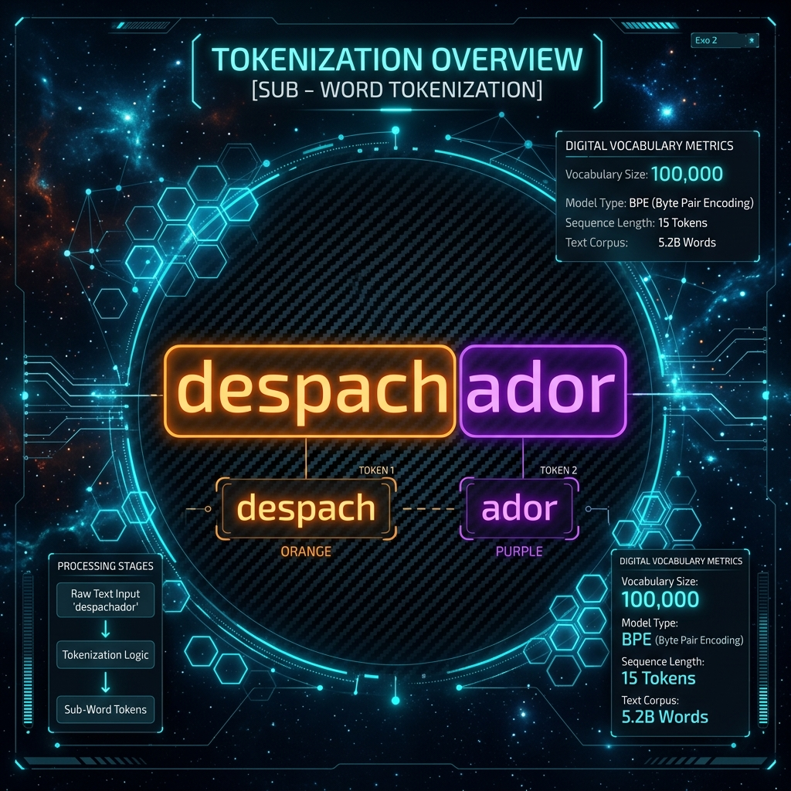
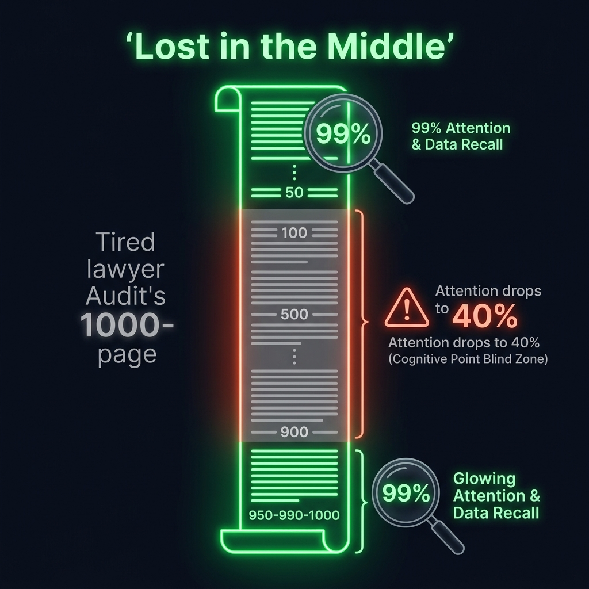
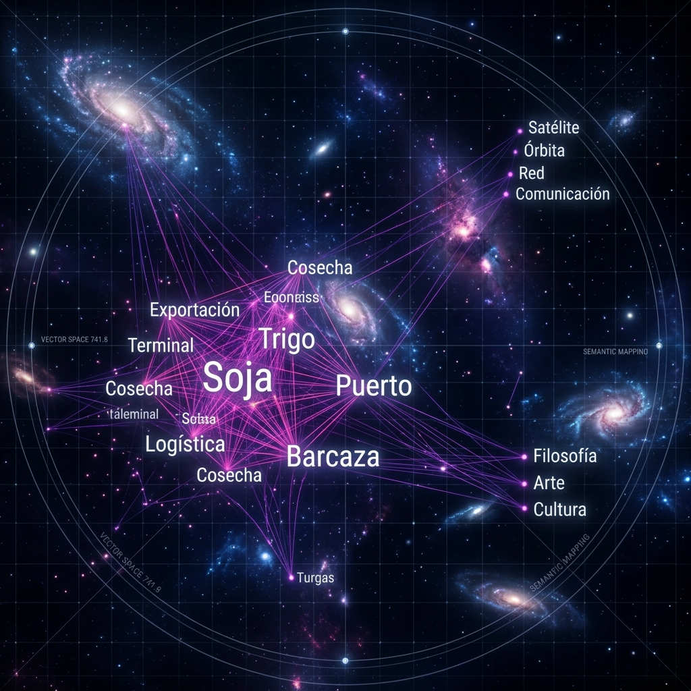
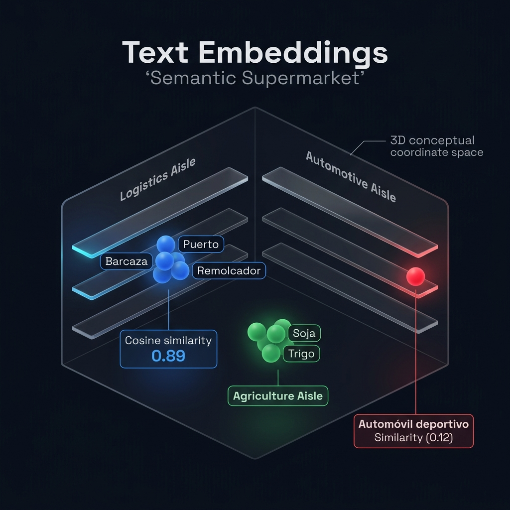
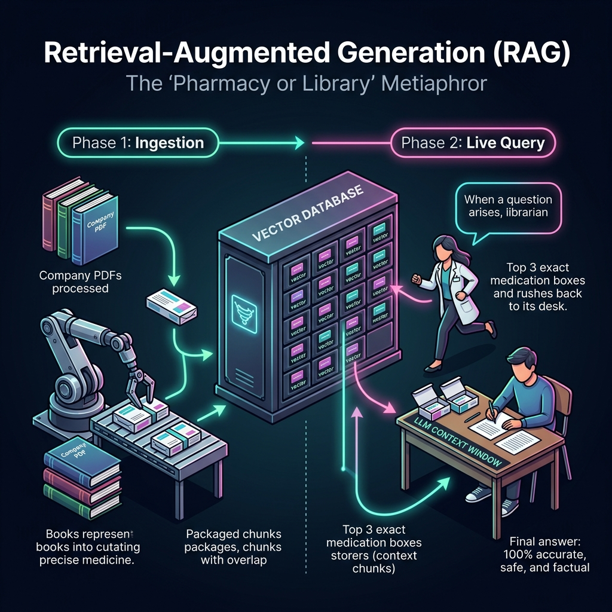
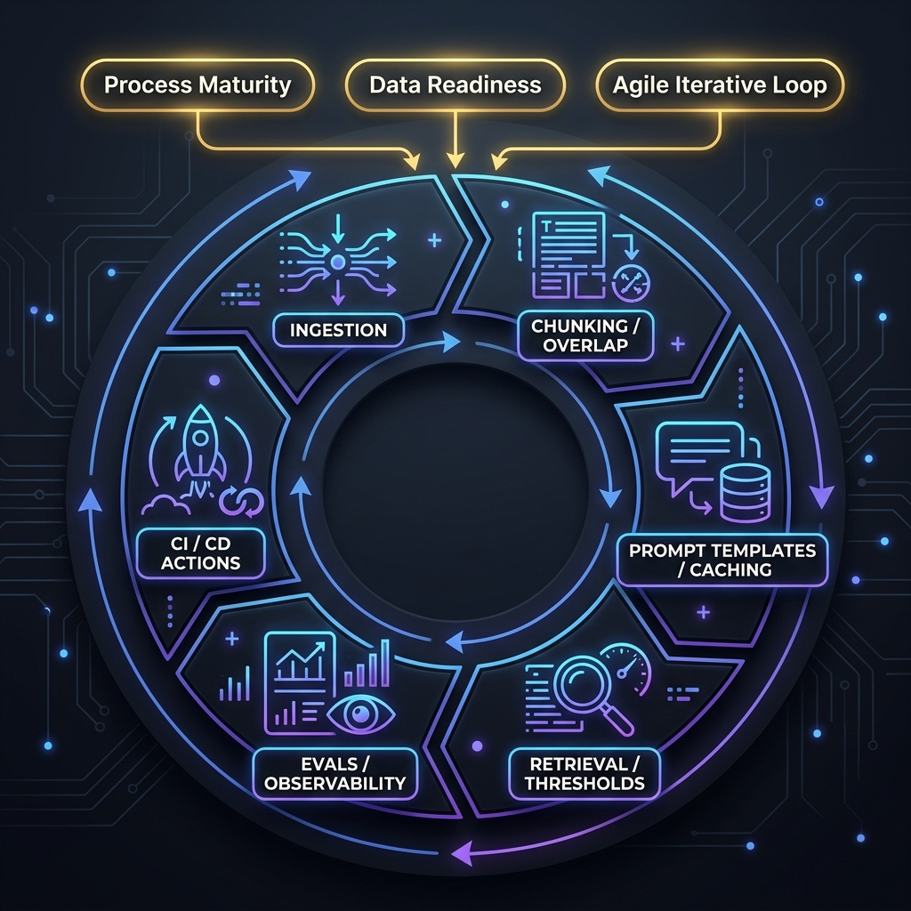

Glosario de Inteligencia Artificial Generativa & Arquitectura RAG
Diccionario técnico-ejecutivo de IA Generativa, LLMs, FinOps de Tokens, Bases Vectoriales y Gobernanza. Diseñado para liderar equipos de ingeniería y defender decisiones de producto.
💡 En palabras simples: La IA no "sabe" cosas ni busca verdades como una enciclopedia: funciona como el texto predictivo de WhatsApp multiplicado por mil millones, calculando qué palabra tiene más probabilidad de seguir a la anterior.
Un Gran Modelo de Lenguaje (LLM) (como GPT-4o o Claude 3.5) es un motor estadístico entrenado con millones de textos para hacer una sola tarea: predecir la siguiente palabra (Next-Token Prediction) según el contexto previo. Como su objetivo es armar oraciones que suenen fluidas y coherentes —y no chequear si un dato es verdadero—, cuando le preguntás algo privado que no conoce, tiende a "rellenar el vacío" inventando una respuesta muy convincente.
La Metáfora:Un sistema de predicción y autocompletado lingüístico altamente avanzado. Imagina el predictor de texto avanzado de un dispositivo móvil que estima la siguiente palabra basándose en el historial de caracteres. Al escalar este concepto a cientos de miles de millones de parámetros matemáticos entrenados con corpus globales de texto, se obtiene un modelo probabilístico. El LLM no posee comprensión cognitiva ni biológica de los conceptos (por ejemplo, el contexto cultural de una traducción o la lógica de un sistema); calcula mediante estadística multidimensional qué secuencia de caracteres es matemáticamente más probable dado el texto de entrada.
Perspectiva del PM: Debes entender el LLM como un microservicio de infraestructura probabilística (un motor de inferencia) consumido mediante APIs seguras. Tu rol no es esperar que el LLM "razone" o "adivine" la lógica de tu negocio por arte de magia, sino estructurar de forma determinista y estricta el prompt de entrada, controlar sus hiperparámetros lógicos —como la Temperatura ($T=0$ para máxima consistencia factual corporativa, $T > 0.7$ para creatividad)— y diseñar guardarraíles lógicos que rodeen al modelo para garantizar su comportamiento comercial seguro.
02
Token
Economía
💡 En palabras simples: Es el invento de Google (2017) que nació para mejorar la traducción de idiomas y dio origen a toda la IA actual. Su truco ("Atención") es mirar toda la oración junta al mismo tiempo para entender el sentido real de cada palabra.
Presentado por investigadores de Google en el famoso artículo "Attention Is All You Need" (2017) para resolver la Traducción Automática. Antes, las máquinas leían palabra por palabra y al llegar al final de un párrafo largo ya habían olvidado el principio. El Transformer introdujo el mecanismo de Atención (Self-Attention): evalúa todas las palabras de una oración en simultáneo para entender su relación (por ejemplo, saber si la palabra "banco" se refiere a dinero o a una plaza según las palabras que la rodean).

Gráfico A: Segmentación BPE (Byte Pair Encoding) por raíces semánticas vs. variantes gramaticales rígidas.
La Metáfora:Los componentes modulares de ensamblaje en una línea de producción. El tokenizador no almacena de forma rígida cada variante gramatical (ej. 'localizador', 'localizamos', 'localizado'). En su lugar, identifica la raíz semántica ('localiz') como un bloque base y le acopla afijos gramaticales ('-ador', '-amos', '-ado') para optimizar la eficiencia del procesamiento de datos en el hardware y asimilar de forma dinámica.
Perspectiva del PM: Toda consulta de API de IA factura de forma variable según el volumen exacto de tokens de entrada (Input tokens) y tokens generados de salida (Output tokens). El PM de IA debe auditar de manera constante esta métrica, ya que determina directamente la latencia de la aplicación (el tiempo de espera del usuario, medido en tokens por segundo) y el costo directo del servicio (Cost of Goods Sold - COGS), lo que impacta de forma radical en el margen unitario de tu modelo de negocio de SaaS empresarial.
03
Ventana de Contexto (Context Window)
Arquitectura
💡 En palabras simples: Es la "perilla de creatividad" de la IA (va de 0.0 a 1.0). En 0.0 la IA es 100% estricta y elige siempre la palabra más segura (ideal para manuales y RAG); si la subís a 0.8 o 1.0 se vuelve creativa pero empieza a inventar.
Parámetro que controla qué tan predecible o creativa es la IA al elegir cada palabra. Con Temperatura = 0.0, el modelo actúa en modo estricto (determinista): elige siempre la palabra número 1 más probable, logrando respuestas estables, repetibles y fieles al manual. En cambio, al subir la Temperatura (0.7 a 1.0), se le permite elegir palabras menos obvias al azar: esto sirve para lluvias de ideas o publicidad, pero en sistemas corporativos aumenta drásticamente el riesgo de alucinaciones.

Gráfico B: Mapa de calor de atención del LLM y efecto 'Lost in the Middle' (Curva en U de retención de información).
La Metáfora:El escritorio físico de trabajo en tu oficina. Si tu escritorio es pequeño (ventana de contexto estrecha de 4k tokens), solo puedes tener dos o tres hojas de regulaciones abiertas a la vez sobre la mesa; si quieres abrir una cuarta, tienes que tirar una de las anteriores al liberación de memoria de corto plazo, olvidando ese dato. Si tienes un escritorio gigante (ventana de contexto masiva de 1 millón de tokens), puedes esparcir archivadores enteros, pero te llevará mucho más tiempo físico pararte a buscar y leer un número de artículo específico en esa inmensidad, sufriendo además el efecto Lost in the Middle en el centro de las páginas.
Perspectiva del PM: Aunque las ventanas de contexto modernas son masivas, saturarlas inútilmente inyectando documentos extensos enteros en el prompt dispara exponencialmente los costos financieros y degrada drásticamente la velocidad de respuesta (latencia de primer token o Time to First Token - TTFT). Tu rol es coordinar con los ingenieros para mantener la ventana de contexto lo más pequeña, limpia y enfocada posible, inyectando exclusivamente la porción exacta de datos que responde a la necesidad inmediata del usuario.
04
Prompt Engineering
Ingeniería
💡 En palabras simples: Así como en traducción cobrás por palabra, los proveedores de IA cobran por "Tokens" (pedacitos de palabras o sílabas). Además, lo que la IA escribe (Output) cuesta entre 3 y 5 veces más caro que lo que la IA lee (Input).
Unidad mínima en la que el modelo divide el texto para leerlo, procesarlo y facturarlo. Usando un método llamado BPE (Byte Pair Encoding), la IA separa las palabras en raíces y sufijos frecuentes (por ejemplo: locali + zación). En inglés, 1.000 tokens equivalen a unas 750 palabras; en español equivalen a unas 650 palabras (porque los acentos y conjugaciones usan más fragmentos). Para el presupuesto de un proyecto (FinOps), siempre hay que distinguir entre Tokens de Entrada (lo que lee) y Tokens de Salida (lo que redacta, que es más lento y caro).
La Metáfora:Darle instrucciones operativas milimétricas a un pasante sumamente inteligente pero sumamente distraído. Este pasante tiene un coeficiente intelectual brillante pero sufre de amnesia total de lo que hizo ayer y de lo que hace en otras computadoras. Si le dices simplemente "redactá un reporte ejecutivo de sprint", te dará un texto genérico e inútil. Pero si le colocas un manual de procedimientos fijo al lado de su silla, le defines su rol formal exacto, le das tres ejemplos idénticos de reportes perfectos anteriores y le prohíbes explícitamente salirse del formato de la plantilla, el pasante te entregará un trabajo con calidad corporativa impecable.
Perspectiva del PM: En entornos corporativos de producción de software, los prompts corporativos jamás se escriben a mano de forma improvisada en un chat. Se programan en el código del servidor backend como plantillas fijas y parametrizables (Prompt Templates), aislando por completo las instrucciones del sistema y las reglas de gobernanza del negocio de los ojos del usuario final, protegiendo así la propiedad intelectual de la compañía.
05
Embedding
Ingeniería
💡 En palabras simples: Es un descuento del 50% al 75% en la factura de la IA: si dejás las instrucciones fijas siempre al principio del mensaje, el proveedor las guarda en memoria rápida para no cobrártelas ni leerlas desde cero en cada pregunta.
Técnica de ahorro de costos y velocidad en llamadas a la API. En un bot corporativo, todas las consultas llevan las mismas instrucciones de marca, reglas de formato y ejemplos fijos al comienzo del mensaje (System Prompt). Con Prompt Caching, el proveedor guarda esa primera parte fija en una memoria rápida: así, en las siguientes consultas de los usuarios, no vuelve a procesar todo desde cero, reduciendo el tiempo de espera (TTFT) a la mitad y ahorrando entre un 50% y 75% del costo de lectura.

Gráfico C: Proyección y distribución geométrica del lenguaje natural en un espacio vectorial multidimensional.
La Metáfora:El GPS semántico o las góndolas de un shopping infinito. Imagina un supermercado gigante de ideas: los conceptos de producto y localización afines como "Glosario", "Traducción" y "Localización" quedan ordenados geométricamente muy juntos en el mismo clúster o vecindario (compartiendo coordenadas decimales casi idénticas con un score de similitud semántica altísimo de `0.89`). En cambio, un concepto no relacionado como "Automóvil deportivo" queda posicionado en otra galaxia semántica del radar a una distancia extrema (similitud de `0.12`). Esto permite que la computadora entienda que "localización de software" y "adaptación cultural" son parientes conceptuales aunque no compartan una sola letra común en su escritura.
Perspectiva del PM: Los embeddings representan el pilar fundamental que habilita a tus productos a realizar búsquedas semánticas y conceptuales. Permiten que el buscador de tu software entienda exactamente qué quiere localizar el usuario de negocio aunque escriba con sinónimos coloquiales, términos específicos de cada industria, o cometa errores ortográficos y gramaticales severos, superando por completo las limitaciones de las búsquedas tradicionales basadas en coincidencia exacta de palabras clave rígidas.
06
Base de Datos Vectorial
Arquitectura
💡 En palabras simples: Es el "escritorio de trabajo" o memoria de corto plazo de la IA: todo lo que entra y sale en una conversación (tus instrucciones, los fragmentos del manual, la charla previa y la respuesta) tiene que caber ahí dentro.
Límite máximo de tokens que un modelo puede recordar y procesar dentro de una misma consulta (por ejemplo, 128.000 tokens en GPT-4o o 200.000 en Claude 3.5). Funciona como la memoria de corto plazo del sistema: dentro de esa capacidad deben entrar las instrucciones del sistema, los documentos de referencia recuperados, el historial de la conversación y la respuesta generada. Aunque hoy existen ventanas gigantes, llenarlas con manuales enteros en cada pregunta dispara el costo por consulta y vuelve lenta la respuesta.

Gráfico D: Radar semántico y agrupamiento conceptual (clústeres lingüísticos vs. ingeniería de software).
La Metáfora:Un centro de almacenamiento robotizado de alta densidad. La clasificación física de las mercancías no responde a un orden alfabético o numérico tradicional. Los sistemas de guiado automático ubican los palets en estanterías tridimensionales basándose exclusivamente en sus coordenadas espaciales vectoriales. De este modo, los manuales de producto y guías de estilo se almacenan de manera contigua a las memorias de traducción y glosarios técnicos, manteniéndose aislados de categorías de datos no relacionadas.
Perspectiva del PM: La base de datos vectorial constituye la memoria semántica persistente y segura de largo plazo para tus desarrollos empresariales de IA. Como PM, debes saber que esta base de datos es el pilar central que te permite inyectar bases de conocimiento privadas, dinámicas y propietarias del negocio en tus sistemas sin comprometer la privacidad ni violar el límite de almacenamiento temporal del escritorio cognitivo del LLM.
07
Chunking (Fragmentación Documental)
Ingeniería
💡 En palabras simples: Cuando le mandás un texto larguísimo de 50 páginas de golpe, a la IA le pasa lo mismo que a una persona: recuerda perfecto el primer párrafo y el último, pero se "distrae" y olvida los datos que quedaron enterrados en la mitad.
Fenómeno demostrado por la Universidad de Stanford sobre cómo prestan atención los modelos de lenguaje cuando reciben demasiado texto junto. Los LLMs recuerdan con altísima precisión la información ubicada al inicio del mensaje (Primacy Bias) y al final (Recency Bias), pero su capacidad de atención cae drásticamente (a veces por debajo del 40%) para los datos que quedan en el medio. Este límite explica por qué necesitamos RAG: en vez de pegar 50 manuales enteros, buscamos solo los 3 párrafos exactos y se los entregamos limpios.
La Metáfora:Dividir una enciclopedia técnica en fichas temáticas numeradas y auto-contenidas. Si intentás entregarle un manual de 300 páginas de una sola vez a un traductor o analista para responder una duda puntual, tardará demasiado y se perderá. En cambio, el algoritmo de Recursive Character Chunking recorta el documento respetando capítulos, párrafos y oraciones completas (ej. fichas de 250 palabras), asegurando que cada fragmento conserve su sentido gramatical intacto para ser indexado en la base vectorial.
Perspectiva del PM: El diseño de la estrategia de Chunking es una decisión de arquitectura de producto crítica que determina el nivel de "resolución" de la memoria del bot. Si los chunks son excesivamente grandes, inyectarás ruido e información irrelevante a la ventana de contexto, disparando costos; si los chunks son excesivamente pequeños (ej. oraciones aisladas de 20 tokens), perderás la cohesión sintáctica y el bot no tendrá contexto suficiente para responder de forma inteligente.
08
Overlap (Solapamiento Semántico)
Ingeniería
💡 En palabras simples: Es cuando la IA no sabe un dato privado o no lo encuentra en el texto, y en lugar de decir "No sé", te inventa una respuesta falsa pero redactada con tanta seguridad y formato profesional que parece verdadera.
Ocurre cuando un modelo genera datos falsos, reglas inexistentes o citas inventadas presentándolos con un tono totalmente convincente y profesional. No es una "falla de software" tradicional, sino la consecuencia natural de cómo funciona un LLM: como fue diseñado para predecir palabras probables sin distinguir verdad de ficción, si no le damos el documento oficial ni le ponemos un freno estricto, inventa la respuesta que suena más lógica.
La Metáfora:La superposición de juntas en la construcción de tuberías de alta presión o la disposición de tejas en una cubierta. Se diseñan secciones de solape en las uniones metálicas para evitar filtraciones y garantizar la estanqueidad. En el procesamiento de texto, se replica esta lógica repitiendo una proporción controlada de caracteres o palabras al final de un fragmento y al inicio del siguiente. Esto asegura que conceptos clave o normativas complejas no queden truncados por el límite físico del algoritmo de división, preservando la continuidad del significado conceptual.
Perspectiva del PM: El overlap es el seguro contra pérdidas de contexto en las uniones. Como PM de IA, debes calibrar esta variable con precisión en tus especificaciones funcionales: un solapamiento muy bajo provocará que el bot no logre relacionar conceptos divididos por el fragmentador; un solapamiento exageradamente alto inflará inútilmente el espacio de almacenamiento vectorial y duplicará costos de procesamiento de tokens de entrada repetitivos en tus facturas.
09
RAG (Retrieval-Augmented Generation)
Arquitectura
💡 En palabras simples: Re-entrenar el modelo para que estudie de memoria (como ir a un taller de escritura). Sirve para enseñarle un tono de voz o estilo fijo, pero NO sirve para cargar manuales o glosarios que cambian todas las semanas.
Proceso técnico que consiste en tomar un modelo base y re-entrenarlo con miles de ejemplos propios para modificar su comportamiento interno. El Fine-Tuning es ideal cuando querés enseñar una forma de hablar, un tono de marca o un formato técnico específico. Sin embargo, es un error usarlo para cargar hechos, tarifas o glosarios que se actualizan seguido: cada vez que cambie una regla el modelo quedará desactualizado, seguirá inventando de memoria y no podrá citar la página exacta.

Gráfico E: Plano detallado de la arquitectura RAG corporativa (Indexación Offline y Búsqueda Semántica Online).
La Metáfora:Un analista legal dictaminando sobre un caso complejo con soporte de un sistema de recuperación documental de alta precisión. En lugar de obligar al estudiante de leyes (el LLM) a rendir un examen de especificaciones de producto y glosarios técnicos sumamente complejos confiando ciegamente en lo que recuerda de memoria de la universidad (entrenamiento base), le permites rendir el examen con un recuperador de datos semánticos de alta precisión (el pipeline RAG) al lado. Cuando el profesor le hace una pregunta en vivo, el recuperador de datos semánticos de alta precisión corre a la biblioteca, extrae las 3 hojas del reglamento oficial que responden con precisión de cirujano al tema y las apoya abiertas sobre el escritorio del estudiante para que redacte su respuesta basándose solo en esos papeles autorizados.
Perspectiva del PM: RAG es el estándar absoluto de la industria para el despliegue de IA en entornos corporativos. Resuelve tres problemas críticos de negocio de una sola vez: 1) Elimina drásticamente las alucinaciones al anclar las respuestas a fuentes reales verificables. 2) Evita incurrir en entrenamientos o fine-tunings de modelos de millones de dólares, permitiendo actualizar la base documental del negocio al instante simplemente actualizando PDFs en la base de datos. 3) Ofrece trazabilidad total y auditoría de fuentes al permitir al bot citar con precisión el nombre del PDF y la página exacta de donde extrajo el dato.
10
Alucinación (Hallucination)
Estrategia
💡 En palabras simples: Hacer que la IA rinda un "Examen a Libro Abierto": antes de que responda una pregunta, un buscador interno saca los 3 párrafos exactos de tu manual vigente y se los pega en la pantalla diciendo "Respondé solo con esto y citá la página".
RAG (Generación Aumentada por Recuperación) es la arquitectura estándar en empresas para conectar un LLM con documentos privados (manuales, glosarios, políticas) sin necesidad de re-entrenarlo. Cuando un usuario hace una pregunta, el sistema primero busca los fragmentos oficiales más relevantes en tu biblioteca autorizada y luego se los entrega al modelo dentro del mensaje para que redacte la respuesta basándose únicamente en esa evidencia verificable.
La Metáfora:Un perito que, al ser consultado sobre un detalle normativo específico fuera de su área de conocimiento directo, emite un testimonio sumamente fluido y convincente en su terminología, pero que carece de veracidad fáctica al citar leyes o datos inexistentes. El argumento posee coherencia sintáctica y formal, pero los hechos citados son erróneos.
Perspectiva del PM: Es el riesgo legal y reputacional número uno de los productos de Inteligencia Artificial Generativa. Como líder de producto, debes estructurar el blindaje semántico del software exigiendo a los desarrolladores la implementación de Confidence Thresholds estrictos, el uso de RAG riguroso y la redacción de instrucciones en el prompt del sistema (System Prompts) sumamente punitivas que ordenen explícitamente al bot decir "No dispongo de información oficial para responder a esta consulta" en lugar de deducir o inventar información ante la menor duda.
11
Golden Dataset
Estrategia
💡 En palabras simples: Un "GPS del significado": convierte cualquier frase o párrafo en una lista de coordenadas numéricas para que el buscador encuentre la misma idea aunque el usuario use sinónimos o pregunte en otro idioma.
Representación numérica (una lista de números o coordenadas, por ejemplo de 1536 dimensiones) que captura el significado e intención de una frase más allá de las palabras exactas que use. Gracias a los Embeddings, el sistema ubica las ideas en un "mapa conceptual": así descubre que "solicitar reembolso", "pedir devolución de dinero" y "request a refund" significan casi lo mismo y viven en el mismo barrio del mapa, superando las limitaciones del buscador clásico (Ctrl+F).
La Metáfora:El patrón de calibración o estándar de referencia en un laboratorio de metrología. Se trata de una muestra física con propiedades conocidas y certificadas por organismos internacionales, contra la cual se contrastan todos los instrumentos de medición del laboratorio. Sin importar las condiciones ambientales o la fecha de la prueba, la calibración de los sensores se valida contra esta referencia estática para garantizar la reproducibilidad y consistencia científica de los resultados.
Perspectiva del PM: En IA empresarial, el testing manual ad-hoc chateando al azar "cinco minutos" no sirve para nada y es irresponsable. Dado que la IA es probabilística, el PM sénior debe exigir la creación y el mantenimiento continuo de un Golden Dataset representativo de los casos extremos de negocio. Este dataset se ejecuta de forma automatizada mediante suites de evaluación ante cada modificación del prompt, del modelo o del chunking, permitiendo al PM certificar con métricas estadísticas sólidas de fidelidad y precisión semántica que el producto mejoró y es seguro antes de ser liberado al mercado.
12
Fine-Tuning (Ajuste Fino)
Estrategia
💡 En palabras simples: Es la regla o termómetro (de 0.00 a 1.00) que mide qué tan cerca están dos ideas en el mapa de significado: si da cerca de 1.00 hablan de lo mismo; si da cerca de 0.00 no tienen nada que ver.
Cálculo matemático que compara las coordenadas (Embeddings) de la pregunta del usuario contra las coordenadas de los párrafos guardados en tu biblioteca, devolviendo un puntaje de cercanía entre 0.00 y 1.00. Si la pregunta y el párrafo tratan exactamente del mismo tema (aunque usen sinónimos), el puntaje será muy alto (ej. 0.92); si tratan de temas sin relación, el puntaje será bajo (ej. 0.18). Con este puntaje el sistema ordena los mejores párrafos (Top-3) y frena respuestas dudosas.
La Metáfora:Pulir o moldear una hermosa pieza de madera preexistente con una lija muy fina. Imagina que contratas a un brillante abogado recién graduado con las mejores calificaciones del país (el modelo base pre-entrenado). Si quieres pulir su comportamiento y enseñarle a redactar contratos formales utilizando exactamente el tono formal, las sutilezas lingüísticas y el estilo estructurado de un especialista técnico o revisor senior de la empresa, aplicas Fine-Tuning (lija fina). Pero si quieres que el abogado revise y dictamine sobre la documentación técnica del nuevo lanzamiento de producto de hoy, no lo mandas de vuelta a estudiar seis años de carrera (fine-tuning); simplemente le acercas los documentos físicos a su pupitre de examen en tiempo real (arquitectura RAG).
Perspectiva del PM: Un error de arquitectura clásico y sumamente costoso que cometen las empresas es intentar usar Fine-Tuning para enseñarle "nuevos conocimientos dinámicos corporativos" a un bot. Grábate esto como máxima de negocio: el Fine-Tuning enseña CÓMO hablar (estilo, formato estructurado y tono), pero RAG enseña QUÉ decir (datos factuales dinámicos e información del negocio). Como PM estratégico, debes defender esta distinción técnica para ahorrarle a tu compañía miles de dólares en servidores e infraestructura de computación innecesaria.
II. Premisas de Oro y Etapas del Desarrollo de IA (Software Probabilístico)
El desarrollo de software basado en IA Generativa y RAG requiere filtros estrictos de viabilidad, gobernanza corporativa y metodologías ágiles continuas. Conoce las 3 Premisas de Oro y las 6 Etapas Técnicas de Ingeniería.

Gráfico F: El Ciclo de Vida del Desarrollo de IA (3 Premisas de Viabilidad & 6 Etapas Técnicas de Ingeniería).
13
Madurez del Proceso (Process Readiness)
Estrategia
💡 En palabras simples: La biblioteca especial donde guardamos los párrafos de nuestros manuales junto con sus coordenadas GPS (Embeddings) para poder encontrar los 3 párrafos más parecidos a una pregunta en milisegundos.
Base de datos especializada (como Pinecone, Qdrant, Weaviate o pgvector) diseñada para guardar y buscar millones de fragmentos de texto a través de sus coordenadas de significado (Embeddings). A diferencia de una base de datos tradicional que solo busca palabras exactas, la Base Vectorial recibe la pregunta del usuario y en pocos milisegundos devuelve los fragmentos más relevantes de los manuales corporativos junto con su puntaje de similitud.
La Metáfora:El repositorio documental desorganizado. Imagina un inmenso depósito donde las cajas de mercadería se descargan en cualquier pasillo, las estanterías no tienen numeración lógica y cada operario acomoda los bultos donde le resulta más cómodo según el día. Si intentas meter robots montacargas autónomos de alta gama (IA) en ese depósito, los robots chocarán constantemente con obstáculos imprevistos, agruparán mercadería errónea y paralizarán la operación del equipo. Primero debes ordenar físicamente los pasillos, numerar los estantes y estandarizar las reglas de ingreso; recién ahí puedes automatizar el depósito con robots.
Perspectiva del PM: Antes de redactar una sola línea de código o prompt, el PM de IA debe realizar una auditoría de madurez del proceso de negocio. Si el proceso adolece de flujos definidos o no cuenta con manuales estables, el PM debe tener la firmeza estratégica de pausar el desarrollo de software y trabajar primero junto a los líderes de operaciones para ordenar, simplificar y estructurar el proceso de negocio humano.
14
Madurez de los Datos (Data Readiness)
Estrategia
💡 En palabras simples: Como los filtros de MercadoLibre (filtrar por "Talle M" y "Envío Gratis" antes de mirar zapatillas): primero filtramos por etiquetas exactas (Idioma = Español, Año = 2026) para que el bot nunca lea un manual vencido de 2021.
Etiquetas de información exacta (como idioma: ES-LATAM, año: 2026, cliente: Enterprise, estado: vigente) que le pegamos a cada fragmento de documento cuando lo guardamos en la Base Vectorial. El Pre-filtrado de Metadatos es vital en empresas: antes de buscar por similitud de significado, el sistema bloquea cualquier documento de otro cliente o de años anteriores, evitando que un manual viejo pero "muy parecido" contamine la respuesta.
La Metáfora:Preparar los archivos fuente antes de cargarlos en una Memoria de Traducción (CAT Tool) o sistema de gestión documental. Si intentás procesar PDFs escaneados borrosos, tablas rotas o versiones viejas mezcladas con borradores sin aprobar, el motor devolverá resultados inconsistentes. En cambio, cuando los documentos están en formatos limpios (Markdown, JSON, PDF nativo con texto seleccionable), con codificación UTF-8 y etiquetados con su versión vigente, el pipeline de IA procesa la información con máxima fidelidad.
Perspectiva del PM: El PM de IA debe auditar de forma severa el "estado físico" de los datos. Jamás debes asumir que porque una empresa tiene "muchos manuales archivados en red" el RAG funcionará bien. Debes presupuestar, planificar y liderar junto con los ingenieros de datos una fase dura previa de extracción, normalización, limpieza y OCR (ETL), garantizando que el pipeline de embeddings consuma información corporativa de alta pureza.
15
Desarrollo Iterativo Ágil (Agile AI Development Loop)
Estrategia
💡 En palabras simples: Cortar un PDF largo de 300 páginas en "fichas" cortas (de ~1 párrafo cada una) antes de guardarlo en la biblioteca, respetando los títulos y puntos aparte para que cada ficha tenga sentido propio.
Proceso de dividir documentos largos (manuales PDF, wikis, reglamentos) en fragmentos más pequeños llamados Chunks (normalmente de unos 500 a 1.000 caracteres, equivalentes a un párrafo grande) antes de calcular sus Embeddings. La mejor práctica para un PM es exigir Corte Semántico o Recursivo (Recursive Character Splitting), que corta respetando títulos, saltos de párrafo y signos de puntuación en vez de partir oraciones o tablas por la mitad.
La Metáfora:La navegación de un buque mercante en aguas abiertas con condiciones meteorológicas dinámicas. Construir software tradicional es equivalente a diseñar una red ferroviaria de alta velocidad sobre terreno firme: el trazado es fijo, determinista y los desvíos están predefinidos. Desarrollar IA, en cambio, se asemeja a la navegación marítima, donde las corrientes marinas y vientos (variabilidad del lenguaje natural y respuestas probabilísticas) inciden sobre la trayectoria. El comandante del buque monitorea los instrumentos en tiempo real y realiza correcciones periódicas de rumbo (calibración de prompts y umbrales) para asegurar el arribo a puerto seguro de manera eficiente.
Perspectiva del PM: Debes educar de forma incansable a los directores de la empresa y gestionar las expectativas comerciales: en Inteligencia Artificial no existe el concepto de "producto 100% terminado de una vez y para siempre". El PM debe concebir el bot RAG como un organismo vivo que requiere un ciclo continuo de mantenimiento ágil, presupuestando tareas de recalibración semanal de prompts, curaduría de la base vectorial y ampliación continua del Golden Dataset basadas en la telemetría real del usuario.
16
Ingestión y Curaduría de Datos (Data Ingestion & Cleaning)
Ingeniería
💡 En palabras simples: Como cuando sacás una foto panorámica y superponés el borde de una foto con la siguiente: repetimos el último 15% de un párrafo al comienzo del siguiente para que ninguna regla o condición quede cortada por la mitad.
Porcentaje de texto (el estándar ideal es 15% a 20%) que se repite entre el final de un fragmento (Chunk A) y el comienzo del fragmento siguiente (Chunk B). Si una regla dice en el borde del corte "Se prohíbe publicar la versión..." y en el renglón siguiente continúa "...si existen errores graves de traducción", el Overlap del 15% hace de puente para que ambos fragmentos conserven la oración completa y la IA nunca lea una regla a medias.
La Metáfora:El despalillado y selección manual de uvas en un viñedo premium. Antes de meter la fruta a la moledora y prensa hidráulica para producir vino de alta gama, debes sentarte a separar las ramas secas, las hojas y desechar las uvas podridas o sucias de tierra. Si tiras todo el follaje crudo e impuro a la moledora, el vino final tendrá un sabor amargo e inutilizable. El desarrollador de datos limpia el manual para dejar solo la "pulpa" semántica de la información libre de ruido.
Perspectiva del PM: "Basura entra, basura sale" (Garbage In, Garbage Out). Una curaduría deficiente arruinará todo el pipeline RAG. El PM debe redactar con precisión clínica los Criterios de Aceptación de esta etapa técnica, exigiendo de forma rigurosa que la información inyectada cumpla estrictamente con las normativas corporativas de privacidad (Enterprise SLAs) y gobernanza de datos de la compañía.
17
Segmentación e Indexación (Chunking & Embedding)
Ingeniería
💡 En palabras simples: La primera mitad de RAG (que ocurre tras bambalinas cuando subís o actualizás un manual): limpiar el PDF, cortarlo con puente del 15%, calcular sus coordenadas GPS y guardarlo etiquetado en la Base Vectorial.
Etapa de preparación de la biblioteca que corre en segundo plano cada vez que el equipo sube un documento nuevo o actualiza un glosario. Consta de 4 pasos: 1) Limpiar el documento quitando encabezados o basura visual; 2) Cortarlo en fragmentos (Chunking) con 15% de solapamiento; 3) Calcular sus coordenadas (Embeddings); y 4) Guardarlo en la Base Vectorial con sus etiquetas de fecha e idioma.
La Metáfora:Envasar y catalogar individualmente cada dosis en la farmacia corporativa. En lugar de apilar manuales inmensos enteros de regulaciones en desorden en los estantes de la farmacia, los ingenieros de datos los recortan en dosis perfectas (chunks con overlap para que no se pierdan datos en la costura de las hojas), les calculan su código de barra químico numérico único (embeddings) y los apilan ordenadamente en índices semánticos estructurados automatizadas etiquetadas meticulosamente.
Perspectiva del PM: Esta etapa técnica determina directamente la precisión y agudeza de la memoria del bot. El PM debe co-liderar con el arquitecto de datos el balance estratégico de esta configuración: chunks muy grandes saturan la ventana de contexto y disparan exponencialmente la facturación de tokens; chunks extremadamente pequeños destruyen la gramática sintáctica y devalúan la precisión semántica del recuperador.
18
Orquestación y Prompt Templates (Orchestration & Caching)
Arquitectura
💡 En palabras simples: La segunda mitad de RAG (que ocurre en 1.2 segundos cuando alguien pregunta en el chat): buscar los 3 mejores párrafos vigentes, pegárselos a la IA con Temperatura 0.0 y devolver la respuesta con cita a la página.
Flujo en tiempo real que se dispara cuando un usuario envía una pregunta en el chat. Consta de 4 pasos rápidos: 1) Convertir la pregunta en coordenadas; 2) Pre-filtrar por metadatos vigentes y rescatar los 3 párrafos más parecidos (Top-3) que superen el puntaje mínimo de 0.75; 3) Armar el mensaje interno (Prompt Aumentado) uniendo las reglas y esos 3 párrafos; y 4) Generar la respuesta con Temperatura 0.0 incluyendo la cita al documento original.
La Metáfora:El diseño de matrices industriales y la implementación de sistemas de peaje automatizados con tarifas preferenciales. En lugar de fabricar piezas unitarias de forma artesanal (redacción de prompts manuales en chats), los ingenieros de software diseñan matrices fijas (Prompt Templates) en el servidor que reciben y moldean los parámetros dinámicos de entrada del usuario. Al habilitar el almacenamiento en caché de prompts (Prompt Caching), el sistema valida el bloque estático de instrucciones base en microsegundos, optimizando el consumo de infraestructura de la API y reduciendo significativamente los costos de procesamiento recurrentes.
Perspectiva del PM: El PM de IA es el dueño funcional de las reglas de negocio codificadas en esta fase. Define el rol del system prompt, las restricciones de tono y los fallbacks de seguridad. Además, debe auditar la correcta implementación técnica de Prompt Caching para bajar los costos financieros de tokens de entrada hasta en un 50% en los comités de presupuesto.
19
Recuperación y Blindaje de Inferencia (Retrieval & Thresholds)
Arquitectura
💡 En palabras simples: El "peaje anti-invento" (ej. nota mínima 0.75 sobre 1.00): si el usuario pregunta algo que no está en ningún manual y el puntaje da 0.35, la barrera no se levanta y el bot responde honestamente "No tengo ese dato" sin adivinar.
Regla de seguridad que define el puntaje mínimo de similitud (generalmente 0.75 sobre 1.00) que debe alcanzar un párrafo de la Base Vectorial para ser considerado válido. Si un usuario pregunta por un tema que no figura en los manuales (y el mejor párrafo apenas llega a 0.40), el sistema frena el proceso antes de llamar al LLM y devuelve un mensaje seguro predefinido (No-Answer Fallback), reduciendo a cero las alucinaciones por falta de datos y ahorrando tokens.
La Metáfora:Un analista legal o técnico dictaminando sobre un caso complejo con soporte de un sistema de recuperación documental de alta precisión súper-rápido. Un especialista del equipo le hace una consulta en vivo al chat; el recuperador de datos semánticos de alta precisión corre a la base de datos de Pinecone, extrae las 3 hojas de la guía de estilo y documentación oficial del producto vigente y las apoya abiertas frente al LLM en su pupitre de examen diciéndole: "Responde basándote exclusivamente en estas 3 páginas". Si el usuario hace una pregunta fuera de dominio que no tiene relación con los manuales, el sistema de control bloquea la inferencia y emite de inmediato un fallback estructurado: "No dispongo de información oficial autorizada para responder a su consulta".
Perspectiva del PM: Esta etapa constituye el blindaje reputacional y legal de la empresa contra alucinaciones. El PM de IA debe liderar la calibración estadística del Confidence Threshold a 0.75 en Staging: un umbral muy bajo (ej. 0.40) dejará pasar alucinaciones muy peligrosas; un umbral extremadamente alto (ej. 0.95) detendrá respuestas legítimas frustrando al usuario.
20
Suites de Evaluación Semántica (Evals & Observability)
Estrategia
💡 En palabras simples: El peligro de pegar secretos de clientes en chats gratuitos (porque el proveedor los guarda para entrenar su IA pública) y la solución profesional: contratar una API Corporativa con "Retención Cero" (borrado inmediato por contrato).
Data Leakage (Fuga de Datos) ocurre cuando empleados suben documentos confidenciales, glosarios de clientes o datos personales a chats públicos gratuitos, cuyos términos permiten guardar ese texto para entrenar futuros modelos comerciales. Para evitarlo, en entornos corporativos se exige una API bajo Enterprise SLA con Zero-Data Retention (Retención Cero): un contrato legal y técnico que garantiza que los datos se procesan en memoria temporal y se borran en el acto sin guardarse ni entrenar modelos externos.
La Metáfora:Los túneles de viento de alta tecnología y las pruebas de colisión instrumentadas (Crash-Tests) en una planta de diseño aeroespacial. La homologación de sistemas de IA corporativos descarta las pruebas manuales o subjetivas de interacción directa. En su lugar, se somete al sistema a simulaciones automatizadas bajo cargas de datos extremas y controladas, empleando sensores de software para medir de forma cuantitativa e inalterable la tasa de desviación semántica, la latencia de respuesta y la estabilidad del modelo ante escenarios críticos de operación.
Perspectiva del PM: Es el corazón de la gobernanza de producto de IA empresarial. El PM de IA es el responsable absoluto de curar el Golden Dataset y establecer las metas estadísticas de calidad semántica mínimas requeridas. Estas devaluaciones numéricas le dan al PM un respaldo científico inestimable ante comités de ciberseguridad, auditorías internacionales o juntas directivas.
21
Despliegue Continuo (CI/CD Pipelines)
Ingeniería
💡 En palabras simples: Tu "examen automático de 100 preguntas reales": una planilla con preguntas fáciles, difíciles y tramposas junto a sus respuestas oficiales correctas, que el sistema corre solo antes de cada actualización para verificar que no empeoró.
Conjunto de entre 50 y 100 casos de prueba reales (creados por el Product Manager y los expertos del área) donde cada pregunta tiene escrita cuál es la respuesta oficial exacta que debería dar el bot (Ground Truth). Este examen se conecta al sistema de entregas del equipo técnico (CI/CD) para evaluar automáticamente cada cambio: si la fidelidad al manual (Context Adherence) cae por debajo del 90%, la actualización se frena antes de llegar a los usuarios.
La Metáfora:Los inspectores láser automatizados en la línea de montaje de una automotriz de alta gama. En lugar de esperar a que el auto llegue al salón de ventas para que el cliente descubra que las puertas no encajan bien por un desvío físico, colocas lectores láser en plena cinta transportadora de montaje. Si un brazo robótico suelda una chapa con un milímetro de desvío, la línea de montaje completa se congela de inmediato, activa las alarmas rojas y evita que el auto inestable ruede hacia la calle.
Perspectiva del PM: Representa el pilar fundamental de la calidad corporativa y la Definición de Terminado (DoD - Definition of Done) que el PM de IA debe exigir. Garantiza la estabilidad del sistema corporativo a largo plazo: ningún cambio de código inestable o regresión semántica del bot podrá llegar a tocar jamás al usuario final, transformando los experimentos probabilísticos en un software corporativo robusto, seguro y altamente confiable.
22
AI SDR (Autonomous Agentic Systems)
Estrategia
💡 En palabras simples: El adelanto de la Sesión 3: mientras el Bot RAG que armamos hoy "lee y responde dudas" cuando le preguntás, un Agente Autónomo además tiene "manos" para hacer tareas (crear tickets en Jira, mandar mails o agendar reuniones).
Sistema de IA que da un paso más allá de RAG (que veremos en detalle en la Sesión 3). Mientras un sistema RAG funciona como un asesor que consulta manuales y responde preguntas en el chat, un Sistema Agéntico (Agentic AI) puede planificar pasos y usar herramientas externas (Tool Calling): por ejemplo, consultar el glosario con RAG, detectar un término faltante, abrir un ticket en Jira y avisar por Slack pidiendo confirmación humana antes de ejecutar acciones críticas.
La Metáfora:El barco de exploración científica de alta gama que comanda su propio timón. A diferencia de la IA pasiva, que actúa como un manual técnico o glosario corporativo guardado en un cajón que solo te responde si abres la tapa y lo lees, el sistema agéntico actúa como un buque explorador autónomo: sale al mar por iniciativa propia, navega de forma independiente las aguas probabilísticas del negocio, toma decisiones autónomas de timón ante tormentas imprevistas y recolecta muestras científicas del agua informándote los resultados de forma periódica sin intervención humana constante.
Perspectiva del PM: Los sistemas agénticos autónomos representan la frontera tecnológica más cotizada de la Sesión 3. Como PM sénior de IA, tu rol fundamental es diseñar y especificar loops lógicos rígidos, orquestadores robustos y guardarraíles de costos y seguridad estrictos (ej. límites rígidos de llamadas recurrentes a APIs para evitar loops infinitos de facturación, y compuertas de confirmación humana obligatoria en puntos críticos del flujo antes de enviar un correo real a un cliente de gran volumen). Esto garantiza que la autonomía y proactividad del bot operen bajo absoluta gobernanza y seguridad de negocio.
III. Tablas Comparativas & Preguntas de Control para Entrevistas IT
Matrices de decisión rápida para defender arquitectura, costos y seguridad frente a CTOs, Tech Leads y reclutadores.
1. Matriz de Decisión: Prompt Engineering vs. RAG vs. Fine-Tuning
Criterio de Producto
Prompt Engineering + Caching
RAG (Retrieval-Augmented Generation)
Fine-Tuning (Re-entrenamiento)
Objetivo Principal
Definir rol, reglas de formato (JSON/Markdown) y ejemplos base (Few-Shot).
Conectar el LLM con conocimiento privado o cambiante (manuales, glosarios, wikis) sin alucinar.
Enseñar un tono de voz, estilo específico o jerga de nicho muy estable.
Frecuencia de Cambio del Dato
Estático en el System Prompt (ideal para Prompt Caching con 50%-75% de descuento).
Alta (Diaria / Semanal / Tiempo Real): basta con actualizar el vector en Pinecone sin re-entrenar.
Baja (Estática): si los datos cambian cada semana, el modelo queda desactualizado de inmediato.
Mitigación de Alucinaciones y Citas
Media (depende de lo que ya sabe el modelo o lo que entra en el prompt).
Muy Alta ("Examen a Libro Abierto"): permite exigir umbral ≥ 0.75 y cita obligatoria al documento fuente.
Baja para hechos: el modelo responde de memoria estadística y no puede citar páginas exactas.
Costo e Complejidad Técnica
Bajo (Horas de configuración).
Medio (Pipeline de Chunking, Embeddings y Vector DB). Estándar corporativo #1.
Alto (Curación de miles de pares, horas de GPU y mantenimiento de pesos).
2. Matriz de Gobernanza: Chat Público / Consumer vs. API Enterprise SLA
Dimensión de Seguridad
❌ Chat Público / Licencias Gratuitas
✅ API Corporativa bajo Enterprise SLA
Retención y Entrenamiento
Los prompts y documentos subidos pueden retenerse y usarse para entrenar futuros modelos comerciales (Data Leakage).
Zero-Data Retention (Retención Cero): prohibición contractual y técnica de usar tus datos para entrenar modelos.
Cumplimiento Legal (NDA / GDPR)
Viola acuerdos de confidencialidad con clientes al exponer propiedad intelectual o PII.
Cumple auditorías SOC2 Type II, ISO 27001, HIPAA y GDPR con cifrado TLS y AES-256.
Control de Costos y Cuotas
Sin trazabilidad programática ni filtros de acceso por rol.
Control granular por API Key, Rate Limiting, Prompt Caching y monitoreo en Langfuse.
3. Cinco Preguntas de Control de una PM Senior para el Equipo de Ingeniería
Sobre Chunking y Overlap:"¿Estamos usando Recursive Character Splitting con al menos un 15% de Overlap para que las tablas de tarifas y reglas de estilo no queden cortadas por la mitad entre dos fragmentos?"
Sobre Lost in the Middle:"¿Cuántos fragmentos (Top-K) estamos inyectando en la ventana de contexto y cómo nos aseguramos de ubicar las instrucciones críticas al inicio y al final del prompt?"
Sobre Metadata Filtering:"¿Qué etiquetas de metadatos duros (idioma, vigencia 2026, cliente) aplicamos en la base vectorial ANTES de calcular la similitud por coseno para no recuperar manuales obsoletos?"
Sobre Umbral Anti-Alucinación:"¿Cuál es nuestro Confidence Threshold (ej. 0.75) para cortocircuitar la llamada al LLM y devolver el mensaje de Fallback seguro cuando no hay respaldo documental?"
Sobre Calidad y CI/CD:"¿Tenemos integrado un Golden Dataset de al menos 50 casos certificados en nuestro pipeline de CI/CD para bloquear el despliegue si el Context Adherence baja del 90%?"